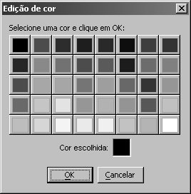
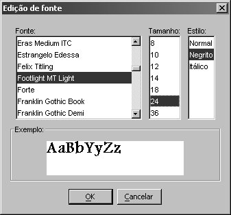
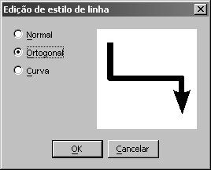

Você pode formatar os elementos da sua ontologia, escolhendo cores e tipos de letras. Você acessa todas as opções de formatação no menu Formatar, na barra de menus.
Essa operação troca a cor da letra dos elementos selecionados. Funciona com todos os elementos que exibem letras: conceitos, legendas e relações binárias. Selecione um ou mais desses elementos, vá na barra de menus, clique em Formatar e, em seguida, em “Cor da letra”.

Selecione uma cor e clique em OK.
Essa operação troca as fontes, ou seja, os estilos e tamanhos das letras dos elementos selecionados. Funciona com todos os elementos que exibem letras: conceitos, legendas e relações binárias . Selecione um desses elementos, vá na barra de menus, clique em Formatar e, em seguida, em “Fonte”. Surgirá o diálogo abaixo.

Aqui, você pode selecionar o nome da fonte (como “Arial” ou “Times New Roman”), o tamanho da letra e o estilo (negrito, itálico ou normal). Faça as alterações e clique em OK.
Essa operação troca a cor das linhas (arcos) selecionadas. Ou seja, só estará funcionando quando você seleciona linhas (arcos). Selecione uma ou mais linhas, vá na barra de menus, clique em Formatar e, em seguida, em “Cor da linha”. Surgirá a tabela de cores abaixo.
Selecione uma cor e clique em OK.
Essa opção troca o formato das linhas (arcos) selecionadas. Ou seja, só estará funcionando quando você seleciona linhas (arcos). Selecione uma ou mais linhas, vá na barra de menus, clique em Formatar e, em seguida, em “Estilo de linha”. Surgirá o diálogo abaixo.

Existem 3 opções: linha reta, linha ortogonal (várias retas) e linha curva. Selecione uma e clique em OK.
Essa operação troca a cor das bordas dos elementos selecionados. Só estará funcionando quando você seleciona conceitos . Selecione um ou mais conceitos, vá na barra de menus, clique em Formatar e, em seguida, em “Cor da borda”. Surgirá a tabela de cores abaixo.
Selecione uma cor e clique em OK.
Essa operação troca a cor de preenchimento dos elementos selecionados. Só estará funcionando quando você seleciona conceitos . Selecione um ou mais conceitos, vá na barra de menus, clique em Formatar e, em seguida, em “Cor do preenchimento”. Surgirá a tabela de cores abaixo.
Selecione uma cor e clique em OK.